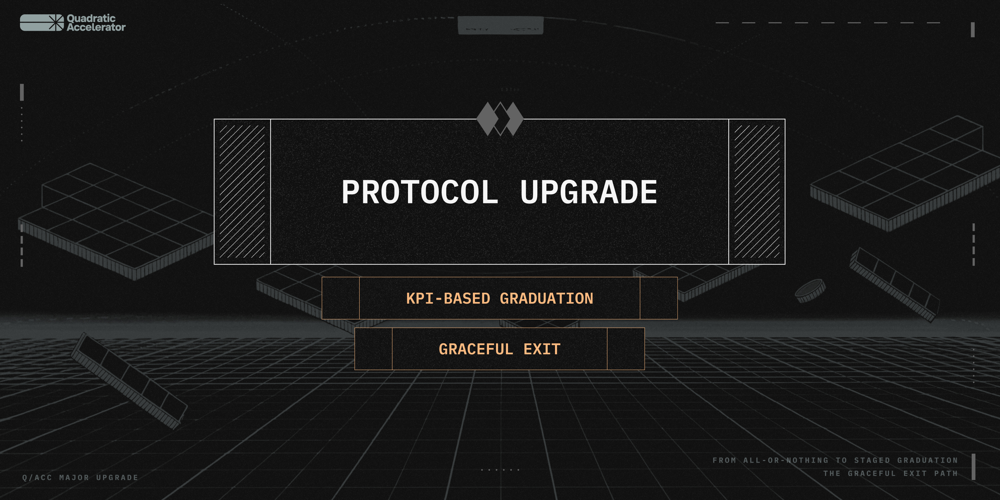
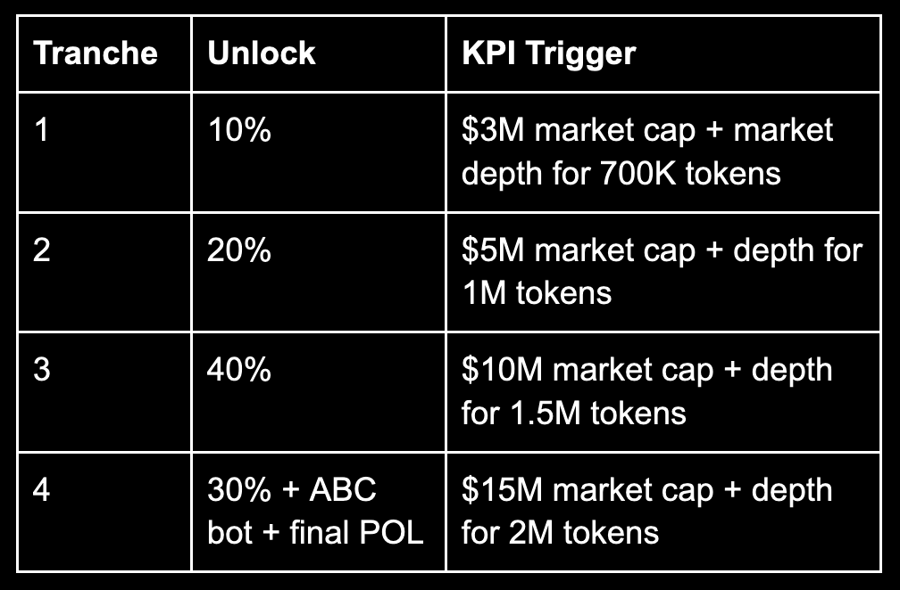

Q/Acc Protocol Upgrade: KPI Graduation & Graceful Exit
Originally published at https://paragraph.com/@qacc/q-acc-protocol-upgrade-kpi-graduation-graceful-exit

The q/acc protocol just got a significant upgrade, and it’s going to reshape how projects graduate and sunset within our ecosystem. We’re introducing KPI-based token unlocks and a graceful wind-down path for teams who don’t reach the finish line.
Why? Because KPIs are more meaningful than time. Because markets don’t move in straight lines. Because founders deserve flexibility. And because capital should never sit idle while momentum stalls.
Let’s break it down.
🎓 From All-Or-Nothing to Staged Graduation
Previously, projects had to reach a $15 million market cap to access the funds in their bonding curve. It was a high bar that delayed capital, discouraged experimentation, and punished volatility.
Now, projects can graduate in stages by hitting clear, measurable KPIs that reflect real growth. Here’s how it works:
Stage 1: Early Momentum (ABC Graduation)
-
Trigger: $1M market cap sustained for 7 days AND 7.5M circulating supply
-
Release: 60% of ABC funds (75k+ to the team, 50k+ to DEX liquidity)
-
Token unlocks remain paused to protect early buyers and ensure long-term alignment
Stages 2 to 5: Token Unlock Tranches

⏱️ Each tranche requires the KPI to stay stable for seven consecutive days; otherwise, the clock resets.
📤 Token unlocks are streamed over two months, not dumped in a single release.
This model rewards sustainable growth, not just flash-in-the-pan hype. It also ensures buyers are protected, with liquidity hitting the market before unlocks.
👋 The Graceful Exit Path
Not every project will make it. That’s part of the game. But even in failure, q/acc tokens NEVER go to zero. Q/Acc now offers a dignified, opt-in wind-down path for teams who wish to sunset their token economy.
Here’s how it works:
-
Trigger: Project initiates a graceful exit
-
Delay: A 21-day waiting period gives buyers time to exit
-
Vesting: Early Access and q/acc round buyers’ lockups are accelerated into a 7-day streamed release.
- Redemption: The token holders who remain after the 21 days (including the team) will receive 50% of the remaining POL liquidity.
-
Remaining tokens in LPs are treated as owned by the team for distribution purposes.
🌀 This model recycles capital, gives founders clarity, respects contributors, and allows for projects to pivot gracefully.
💡 Why It Matters
This change isn’t just about easing rules. It’s about realigning incentives and respecting market signals.
-
Builders get faster access to capital if they’re delivering real growth
-
Buyers are protected from early dumps and backed by real liquidity
-
Projects that fail don’t drag on endlessly. They exit fairly and fast.
Above all, it proves one thing:
The q/acc protocol evolves with its users. This isn’t some static launchpad. It’s a living, breathing mechanism built for real market dynamics, not idealistic dreams.
🔮 What’s Next
This graduation model applies immediately to all current and future projects. If you’re building in the q/acc ecosystem, this is your new roadmap.
-
✅ If you’re growing, accelerate
-
❌ If it’s not working, exit gracefully
We’re not here to fund “ideas.” We’re here to build sovereign token economies. This is the next step in making that a reality.
Originally published on Quadratic Accelerator